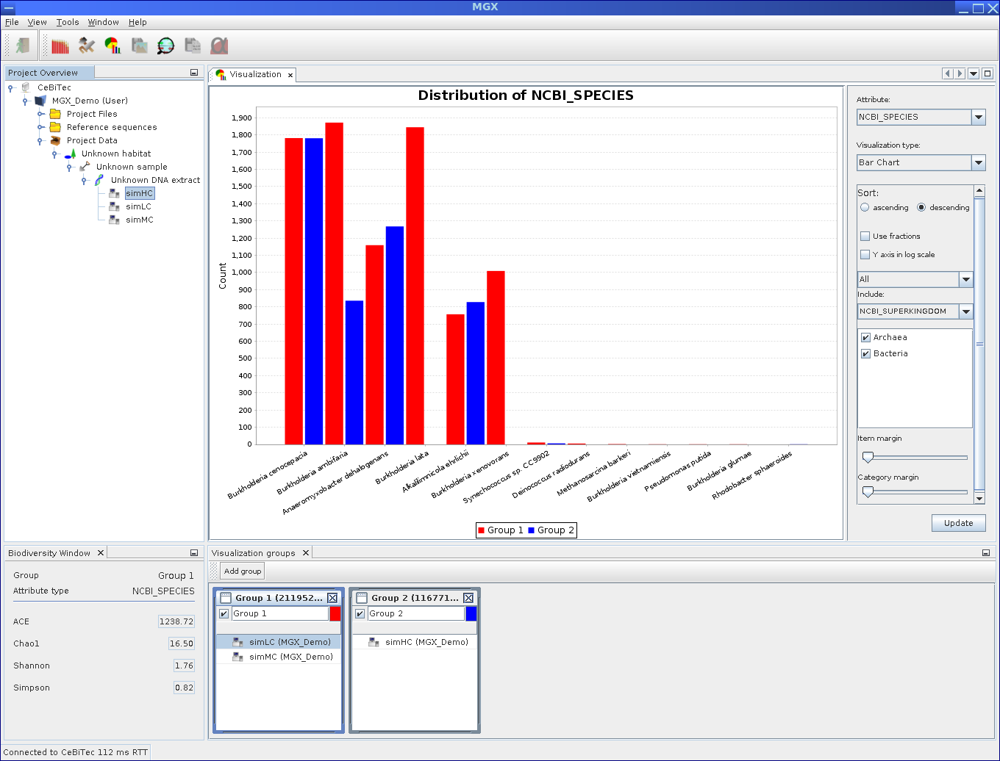

Next: Uploading own files Up: Visualization of results Previous: Exporting sequences Contents
|

|
The visualization module features another component used to display commonly used biodiversity indices, such as the ACE, Shannon [Spellerberg and Fedor, 2003], Chao1 [Hughes et al., 2002] and Simpson [Simpson, 1949] indices. The component will automatically show the index values for the currently selected visualization group based on the chosen attribute type (2.29).